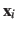

Moving frame of reference.
The following options define an automatic calculation of an optimal translation (centerReference) or optimal rotation (rotateReference), that superimposes the positions of this group to a provided set of reference coordinates.
This can allow, for example, to effectively remove from certain colvars the effects of molecular tumbling and of diffusion.
Given the set of atomic positions
, the colvar  can be defined on a set of roto-translated positions
can be defined on a set of roto-translated positions
 .
.
 is the geometric center of the
,
is the geometric center of the
,  is the optimal rotation matrix to the reference positions and
is the optimal rotation matrix to the reference positions and
 is the geometric center of the reference positions.
is the geometric center of the reference positions.
Components that are defined based on pairwise distances are naturally invariant under global roto-translations.
Other components are instead affected by global rotations or translations: however, they can be made invariant if they are expressed in the frame of reference of a chosen group of atoms, using the centerReference and rotateReference options.
Finally, a few components are defined by convention using a roto-translated frame (e.g. the minimal RMSD): for these components, centerReference and rotateReference are enabled by default.
In typical applications, the default settings result in the expected behavior.
-
centerReference
 Implicitly remove translations for this group
Implicitly remove translations for this group
Context: atom group
Acceptable values: boolean
Default value: off
Description: If this option is on, the center of geometry of the group will be aligned with that of the reference positions provided by either refPositions or refPositionsFile.
Colvar components will only have access to the aligned positions.
Note: unless otherwise specified, rmsd and eigenvector set this option to on by default.
-
rotateReference Implicitly remove rotations for this group
Context: atom group
Acceptable values: boolean
Default value: off
Description: If this option is on, the coordinates of this group will be optimally superimposed to the reference positions provided by either refPositions or refPositionsFile.
The rotation will be performed around the center of geometry if centerReference is on, around the origin otherwise.
The algorithm used is the same employed by the orientation colvar component [3].
Forces applied to the atoms of this group will also be implicitly rotated back to the original frame.
Note: unless otherwise specified, rmsd and eigenvector set this option to on by default.
-
refPositions Reference positions for fitting (Å)
Context: atom group
Acceptable values: space-separated list of (x, y, z) triplets
Description: This option provides a list of reference coordinates for centerReference or rotateReference.
If only centerReference is on, the list may contain a single (x, y, z) triplet; if also rotateReference is on, the list should be as long as the atom group.
-
refPositionsFile File containing the reference positions for fitting
Context: atom group
Acceptable values: UNIX filename
Description: Supplies the reference positions (mutually exclusive with refPositions).
Atomic positions are read differently depending on the three following scenarios:
i) refPositionsCol is specified: the PDB file contains a set of position larger than the size of the group, and positions are read according to the value of the column refPositionsCol (which may be the same as atomsCol).
ii) refPositionsCol is not specified and the PDB file contains exactly as many ATOM records as the atoms in the group: all positions are read in sequence;
iii) refPositionsCol is not specified and the PDB file contains the entire system: the positions corresponding to the numeric indices of the atom group are read.
-
refPositionsCol PDB column containing atom flags
Context: atom group
Acceptable values: O, B, X, Y, or Z
Description: Like atomsCol for atomsFile, indicates which column to use to identify the atoms in refPositionsFile.
-
refPositionsColValue Atom selection flag in the PDB column
Context: atom group
Acceptable values: positive decimal
Description: Analogous to atomsColValue, but applied to refPositionsCol.
-
refPositionsGroup Use an alternate set of atoms to define the roto-translation
Context: atom group
Acceptable values: Block refPositionsGroup { ... }
Default value: This group itself
Description: If either centerReference or rotateReference is defined, this keyword defines an alternate atom group to calculate the optimal roto-translation.
Use this option to define a continuous rotation if the structure of the group involved changes significantly (a typical symptom would be the message ``Warning: discontinuous rotation!'').
The following example illustrates the syntax of refPositionsGroup: a group called ``atoms'' is defined, including 8 C atoms of a protein of 100 residues.
An optimal roto-translation is calculated automatically by fitting the C trace of the rest of the protein onto the coordinates provided by a PDB file.
# Example: defining a group "atoms", with its coordinates expressed
# on a roto-translated frame of reference defined by a second group
atoms {
psfSegID PROT
atomNameResidueRange CA 41-48
centerReference yes
rotateReference yes
refPositionsGroup {
# define the frame by fitting the rest of the protein
psfSegID PROT PROT
atomNameResidueRange CA 1-40
atomNameResidueRange CA 49-100
}
refPositionsFile all.pdb # can be the entire system
}
The following two options have default values appropriate for the vast majority of applications, and are only provided to support rare, special cases.
Jérôme Hénin
2015-03-03